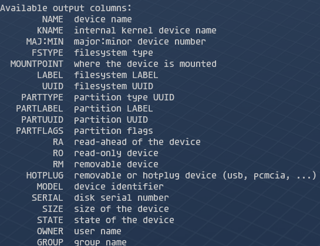
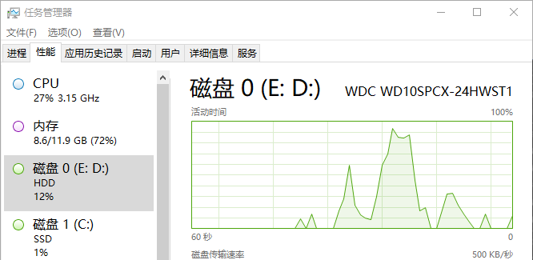

判断磁盘是ssd还是hdd
Linux
通过文件系统
rotational为1代表可以旋转，为hdd，为0代表不能旋转，为ssd
查看位置在/sys/block/sd*/queue/rotational 1
2
3
4[root@dushenda home]# grep ^ /sys/block/sd*/queue/rotational
/sys/block/sda/queue/rotational:1
/sys/block/sdb/queue/rotational:1
/sys/block/sdc/queue/rotational:1
lsblk
1 | [root@dushenda home]# lsblk -o name,rota,VENDOR |
lsblk可选行信息如下等，通过lsblk --help查看 
smartctl
该工具需要自行安装Ubuntu和CentOS安装包名称均为smartmontools。 1
2
3
4
5
6
7
8
9
10
11
12
13[root@dushenda home]# smartctl -a /dev/sdc
smartctl 7.1 2019-12-30 r5022 [x86_64-linux-5.15.133.1-microsoft-standard-WSL2] (local build)
Copyright (C) 2002-19, Bruce Allen, Christian Franke, www.smartmontools.org
=== START OF INFORMATION SECTION ===
Vendor: Msft
Product: Virtual Disk
Revision: 1.0
Compliance: SPC-3
User Capacity: 1,099,511,627,776 bytes [1.09 TB]
Logical block size: 512 bytes
Physical block size: 4096 bytes
LU is thin provisioned, LBPRZ=0
Windows
powershell
1 | (base) PS C:\Users\dushenda> Get-PhysicalDisk |
GUI
在任务管理器下查看 